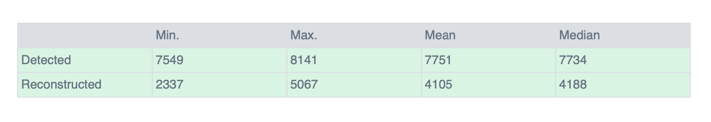

Statistics and Quality Report¶
OpenSfM commands compute_statistics and export_report respectively generates a JSON statistics file and a PDF report based on it. The report is broke down into several subsection, which are documented below.
Dataset Summary¶

Dataset : name of the dataset’s folder name
Date : day and time at which reconstruction.json was created by the reconstruct command.
Area Covered : area covered by the bounding box enclosing all the cameras
Processing Time : total time taken by the SfM processing (detect_features, match_features, create_tracks and reconstruct)
Processing Summary¶

Reconstructed Images : reconstructed images over total number of images
Reconstructed Images : reconstructed points over total number of points in the tracks.csv file (create_tracks)
Reconstructed Components : number of continously reconstructed sets of images
Detected Features : median number (accross images) of detected features
Reconstructed Features : median number (accross images) of reconstructed features
Geographic Reference : indicated wether GPS and/or GCP have been used for geo-alignment
GPS / GCP errors : GPS and/or GCP RMS errors

The top-view map represent GPS coordinates of images in blue points and the actual reconstructed position in red. Lines links images in order of their capture time. Reconstructed points are visible as true-colors points.
Features Details¶

The heatmap represent the density of detected features : the gradient goes from blue for no features, to yellow for the most.

The table below lists minimum/maximum/mean and median detected and reconstructed features accross images.
Reconstruction Details¶

Average reprojection error (normalized/pixels): normalized (by features uncertainty) average norm of reprojection errors and same, but pixel-wise,
un-normalized, error. Errors bigger than 4 pixels are pruned out. - Average Track Length : average number of images in which a reconstructed points has been detected. - Average Track Length (> 2) : same as above but ignoring 2-images points.
The tables are the histogram of the certainty-normalized and un-normalized reprojection errors norm. Errors bigger than 4 pixels are pruned out.

Tracks Details¶

The plot shows a graph of image’s coordinates (GPS-based), which links are colored by the amount of common detected points any two images pairs shares : yellow for few common points, blue for the most. In addition, the dots representing the images are colored by same color if the images are in the same connected component.
The table is the histogram of the number of reconstructed points for a given number of image detections.
Camera Models Details¶

For each camera model, the table shows the initial values in camera_models.json and the optimized values that were computed during reconstruct and that are stored in the reconstruction.json file.

The plot shows, for each camera model, a grid of the reprojection errors averaged by cells of fixed size. In addition, this per-cell reprojections error are represented by scaled arrows (see plot legend) which color depends on their norm : yellow for the bigger errors, blue for the smaller ones.
GPS/GCP Errors Details¶

- The GPS/GCP tables lists :
Per-coordinates (X, Y, Z) sum of errors, median and standard deviation (sigma)
Per-coordinates and total RMS (root mean squared) errors.